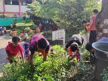

Program Unggulan

Lingkungan Hidup Sehat
kegiatan ini memberikan edukasi tentang kemandirian dan kesadaran peserta didik tentang kesehatan

Lingkungan subur
kegiatan yang mendorong siswa untuk mencintai alam dan menjaga ekosistem udara dengan menanam tumbuhna dan sayur mayur

Stop Bullying
memberikan kesadaran tentang bahaya bullying dan akibat yang ditimbulkan.